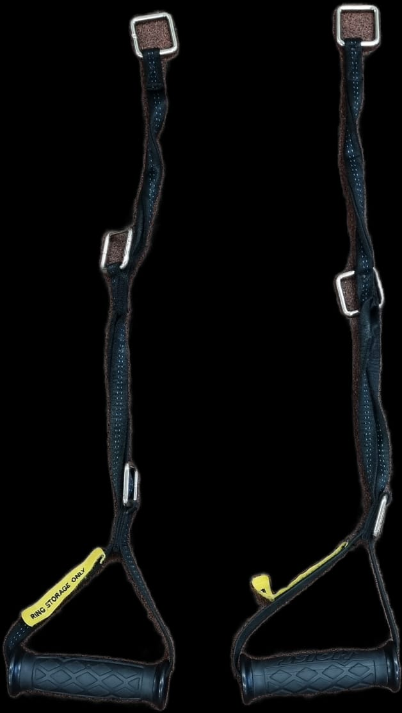

HOIST MI7 TRAINING SYSTEM
Smith Machine
● Verstelle die Hantel in der höhe so, dass du sie nachher mit leicht
angewinkelten Armen aus der Halterung heben kannst
● Verstell die silbernen Sicherheitsbrücken an den Seiten der Maschine so,
dass falls du die Hantel darauf ablegen musst, sie oberhalb deiner Brust
aufliegt
● Befestige nun auf beiden Seiten der Hantel dieselben Gewichtsplatten
● Platziere die Bank unterhalb der Hantel so, dass die Hantel in der Halterung
auf der Höhe von deinem Hals ist
● Verwende folgende Gewichte an der Smith Machine:
Kabelzug
Du kannst die Höhe des Kabelzugs verstellen, indem du leicht am gelben Griff
ziehst, welcher sich direkt am Kabelzug befindet.
Obere Brust
● Stelle die Höhe des Kabelzugs auf Hüfthöhe einMittlere Brust
● Stelle die Höhe des Kabelzugs auf beiden Seiten auf Brusthöhe einUntere Brust
● Stelle die Höhe des Kabelzugs auf Kopfhöhe ein● Verwende folgende Griffe. Hänge dafür beide Griff an Kabelzug ein, jeweils einen an der linken und einen an der rechten Seite.

Trizeps
● Um den Trizeps zu trainieren, stellst du einen der beiden Kabelzüge auf Kopfhöhe ein, und hängst den gewünschten Griff an. Ich empfehle hier den schwarzen, zweiteiligen Seil GriffDips
● In der Mitte der Maschine hat es 2 Griffe, diese klappst du nach unten und rotierst sie entweder nach innen oder außen, je nachdem was für dich angenehmer ist bei der Ausführung
Klimmzug
● Im vorderen Bereich oben an der Maschine hat es 5 verschieden Griffe für
Klimmzüge
● Die innersten Griffe sind verstellbar, diese kannst du nutzen für Klimmzüge
mit engem Griff